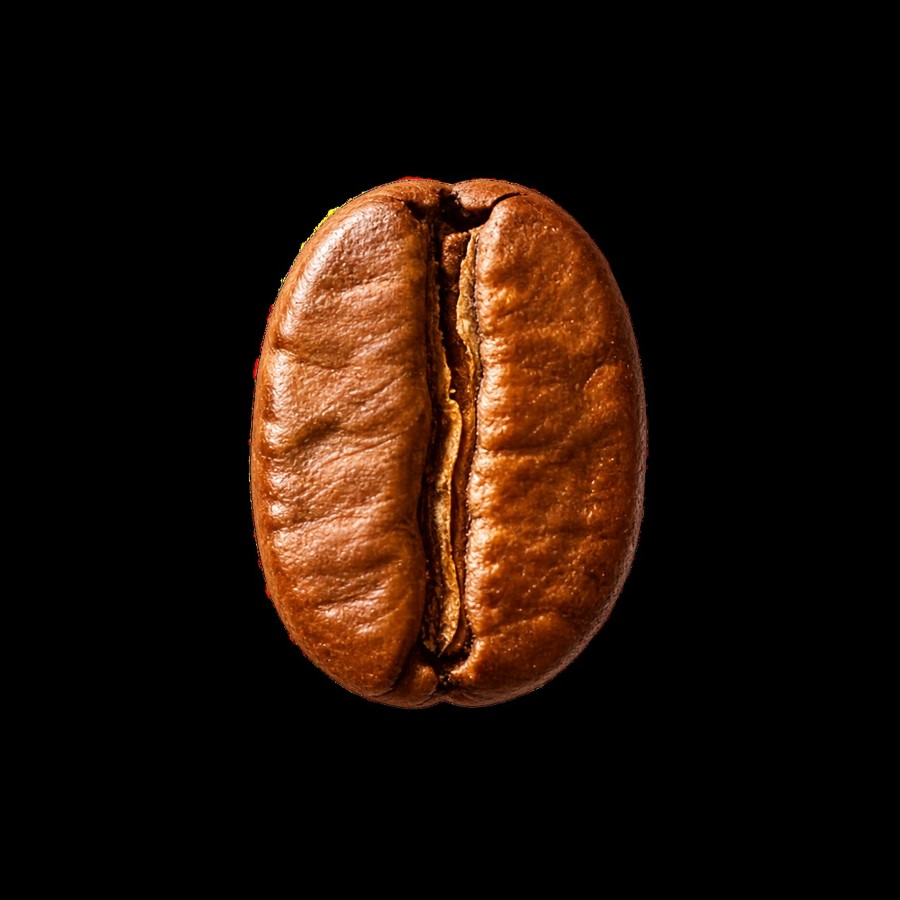
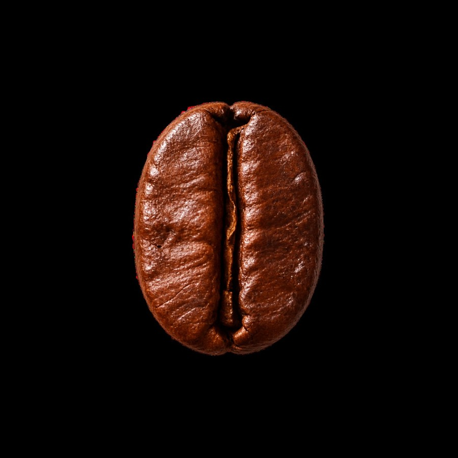
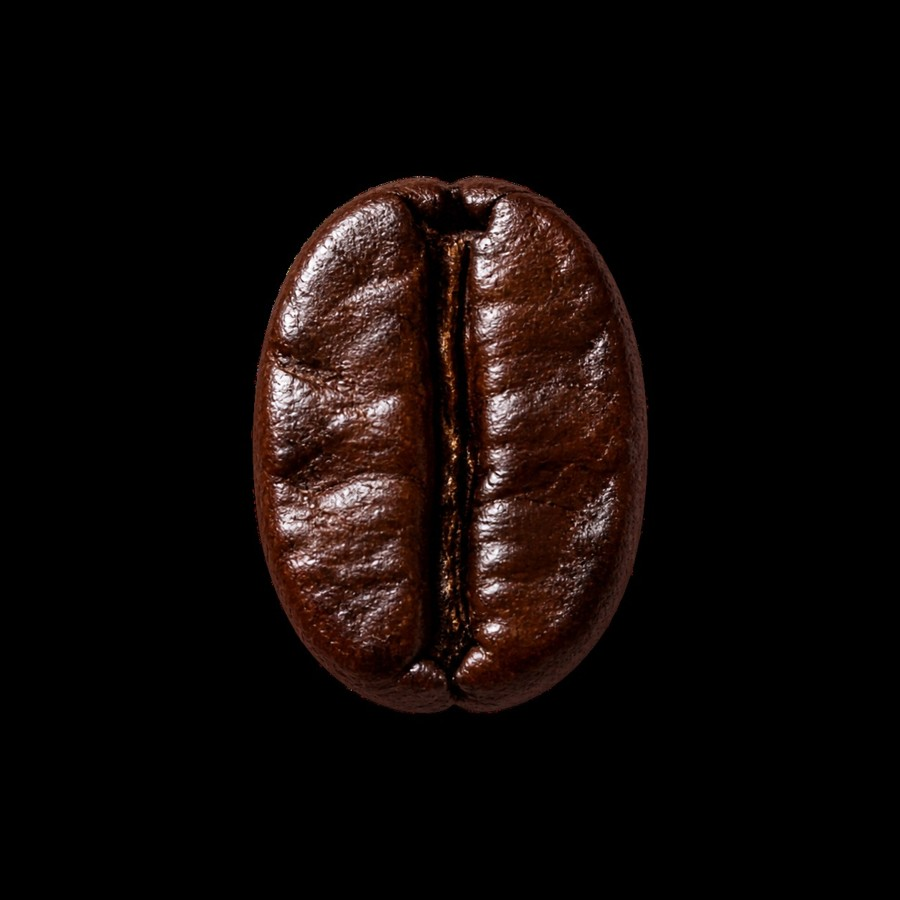

Choosing Coffee Beans
The beans are the most important part of a good cup. Two things change the taste the most: the roast level and the origin (where the beans were grown).
Roast Levels

Light Roast

Medium Roast

Dark Roast
| Roast Level | Acidity | Body | Common Flavors | Suggested Water Temperature |
|---|---|---|---|---|
| Light | High | Light | Flowers, lemon, berries | 93–96°C |
| Medium | Medium | Medium | Caramel, nuts, chocolate | 88–92°C |
| Dark | Low | Heavy | Dark chocolate, smoky |
Popular Origins
- Ethiopia – floral and fruity, like tea.
- Colombia – balanced, with caramel sweetness.
- Brazil – nutty and chocolatey, low acidity.
- Indonesia – earthy and heavy body.
- Taiwan – Alishan coffee is grown in Chiayi and is often sweet and clean.
How to Store Your Beans
- Buy whole beans and grind them just before brewing.
- Keep beans in an airtight container.
- Store them in a cool, dark place, away from sunlight.
- Try to finish the bag within 3–4 weeks after the roast date.
Now that you know your beans, test yourself with the Coffee Quiz!
Learn more about coffee roasting on Wikipedia.